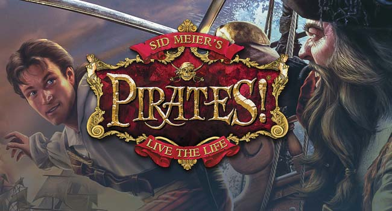

I've recently hacked my PSP and was working through the 8chan game recommendation chart. First was TwinBee Portable - I knew this one from my NES days, and it's great...to kill 15 minutes and forget about it. Next was Crush...interesting concept, I guess, but I just couldn't get into it; it requires too much focus but does not really manage to pull you in. The WipeOut games...fun for a race or two, but again - not something you can attach yourself to. Burnout Legends is the same but worse - at least the WipeOuts are colorful and have shooting; this is just a boring "realistic" car game. Finally, upon a pile of dirt, I've found a treasure that I'd like to present to you today - Sid Meier's Pirates!
You are first greeted by a short cutscene showing your family eating while a pirate they are indebted to barges in and kidnaps them all...except a child (which is you) who manages to escape and promises to rescue his family. 10 years later, all grown up, you enter a tavern where you can choose the period you will be playing in, the difficulty, your character's skill, and the country you ally yourself with. Don't worry, you can switch allegiations during the game (or just beat up on everyone, if that's what you want!), as well as increase the difficulty. As you've finalized your choices, another cutscene shows you on a ship with a bully captain whom you stand up to, dump him into the sea and become the captain yourself! And thus, your voyage can begin!
Your first destination will be the port of your chosen country. There, you will learn which other countries you are at war with; you can also recruit more crew, get information (which can add quests to your quest log), upgrade your ship (every port contains different upgrades), and sell or buy food and other things. Later, more options will become available, but for now - let's leave the port and...and do what? In a true open world fashion, you can do whatever you want - the whole map is available right from the start. A common choice is to plunder the ships of your enemy country - which will increase your standing with the governor; but is by no means necessary. You can betray them right at the beginning of the game, or choose to attack only neutral (pirate) ships. Wait, you said attack ships? That's one of the most significant parts of the game, so let's explore it now...
Probably the thing you will do the most often in this game, and it offers tremendous variety. The starting ship you've got (every country and period will have a different one) is one factor that determines how the encounter will go; others are: the enemy's ship, the amount and kind of upgrades you've got, the damage your ship has suffered so far, and of course your skill and the choices you make. You can try to sink it with your cannons (three different types of shots, if you've managed to get them all) or barge at him which will begin the fight ON the ship; he can also run away if he's fast enough. Wait, you said fight on the ship?
Another significant "minigame" of Sid Meier's Pirates, and one even more developed. You have the choice of three swords which all have different properies (your enemy will also use one of these). You can do a high, low, or middle attack or block; whoever successfuly executes a move will increase his advantage meter (which makes the enemy slower, easing the fight); offensive moves will also push the enemy back. There are also special moves to perform that require using environmental hazards - like kicking a bucket on the ground using the low-attack; they are more potent in sending the enemy away than regular hits. The match ends when one of the captains falls off the ship or surrenders (this happens when he has no more crew remaining - since they are fighting as well). The encounter is also accompanied by well-made and funny as fuck animations, like getting hit in the face with a bucket. If you win, you can then decide to take or sink his ship, and some of the remaining crew will join you - this might include specialists that will provide boosts to repair or other ones. Okay, now that you've plundered a ship, time to take the money and...
It is rare that an RPG does this well - usually you either have way too much of it, and are never in danger of losing it, so it becomes irrelevant; or there is just not much to spend it on once you've acquired the weapons and items you want. Not Sid Meier's Pirates - the money is often in short supply and you constantly need to repair ships, buy new upgrades, food, information, etc. But the big thing is that your crew will get unhappy if you sail for too long without dividing the plunder, so there is always this pressure of losing most of your money. The way to avoid this is to have enough of it at all times so that the crew does not complain; or just don't have a lot of crew - both of these options are risky. I don't think I've seen an RPG that does money management better than Sid Meier's Pirates.
After you've sank enough ships, the governor can increase your rank if his country was at war with the ships you've sank; you can advance in more than one country. This provides benefits such as decreased repair and upgrade prices, ability to recruit more crew, and most importantly...the ability to dance with the governor's daughter!
Another "minigame" of Sid Meier's Pirates - this one is pretty simple but requires good concentration and timing. Anytime an arrow reaches the center of the screen, a directional button you have to press will appear, and you only have a little time to do it. The beauty of the daughter as well as certain items you might have determine how easy it is to play this minigame. If you press the wrong button or none at all in time, the character will fall over and embarass the daughter. If you've done well enough (heart gets bigger as you do better), she will reveal some important information that can lead to new quests, or give you a useful item. You can also marry the woman - this requires clearing the dances, beating her previous fiance in a swordfight, and finally - rescuing her from a kidnapper.
If you've bothered a nation enough, they will put a bounty on your head and start sending ships after your ass, so watch out! At this point, you will not be able to enter the ports of that nation anymore, except by sneaking in (yes, the devs have even managed to stick in Thief-style stealth in the game!), or...attacking the town!
Probably my favorite minigame of all. When you enter an enemy port, you will be told the amount of soldiers that guard it - you can then decide if you want to engage in the fight or sail away. If you do, you first have to choose the starting position (very important - you don't want to get trapped by rocks or enemy shooters will destroy you). Then position your ground and ranged troops, and move them smartly to beat up the other guys with as little losses as possible. There is actually a lot of depth to this minigame, including covers, critical hits, morale, etc. If you've overwhelmed the opponents, they will eventually run away scared; if your remaining crew is high enough, you will be able to capture the enemy town - and put there a governor of your choice. This means you can take over the whole map for a certain country, if that is what you desire.
Sometimes you will receive a piece of a map which shows you where a family member, city or treasure is located; if you search there it will start another minigame where you have to navigate the land to find the place marked on the map. If you take too much time or lose all four of your workers (to tigers or traps) it will kick you out.
Other times, people will give you information about famous pirates of the Caribbean. You can then try to find them and beat them up; watch out though - they are pretty strong! If you manage to do so, there's lots of gold for the taking, as well as a gain in notoriety that people in taverns will notice.
In many RPGs, time is said to pass but it has no actual effects. Not in Sid Meier's Pirates - which is the game's biggest advantage. The world is truly alive (this is where many other open world games fail completely); every ship you encounter has a real task to do and will change the world - for example boosting the target port's population or even taking over another country's port. Of course you are in the middle of this and can affect things as well - through sending neutral ships to attack a certain port for example (a smart way to capture a heavily populated one!). The dynamics of countries will also change according to the period you're playing in. Even the information you receive from NPCs is time-based - for example, a pirate you are searching for might have been in Maracaibo when you've set sail - but he's gone back to his home port Ville de Tresor while you were traveling; this can often end up in a kind of hide-and-seek game. Your character is also aging which affects his abilities; when you hit 30, you might notice that beating up baddies in fencing matches does not come so easy anymore.
Nothing special, but they do fit the pirate theme very well. The humor of some of the animations is top tier, as well.
Okay, I think I've rambled for too long - and I've only just scratched the surface of what you can do in this game. Going to prison, dueling with criminals in taverns, escorting peace treaty ships...the possibilities are endless. Not to mention the effects of wind or storms - this game is deeper than the sea you're sailing on...So does it have any flaws? Not that I can see...okay, maybe one slight one. Simply, it can take some time to really get how to play this game - and at this point you might have wasted a few years before realizing that, for example, it is important to have a Pinnace ship for traveling faster. Since the game doesn't really tell you much except some snippets - but maybe that's the better way, since it encourages discovery. However, you can easily play through your mistakes - save scumming is not necessary; this is another huge + of Sid Meier's Pirates, in contrast to most other games where a slight hiccup means an immediate quickload...Hmm, now that I think about it - maybe a peaceful route could be more developed. I mean, half of the map is empty - they could have really put some randomly scattered treasures in there. Or how about finding a pirate trapped on a small island and being able to rescue him. Maybe shpiwrecks that are able to be searched for items...Regardless of this small flaw, the game offers more sandbox feel than almost any other. These days, it is hard to get me so invested in a video game - but Sid Meier's Pirates has managed to do it! Perhaps it will do that for you as well - heavily recommend trying it!
For your first game you will be mostly learning, so your next one will be New Game+ just from the knowledge you've gained. Another starting period or country will provide a completely different experience. If you've mained the Pinnace last game, try a warship this time - will change the focus from fencing to naval combat. Do things you haven't done before - buying low and selling high is an actual way to get rich! Sneak into a town instead of fighting. Try starting at Swashbuckler difficulty - see how you like swordsfights now! Add a no-load playthrough for a true challenge (the fun in this game comes from dealing with your fuckups!)